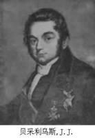
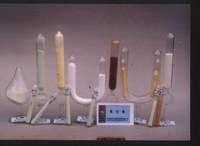
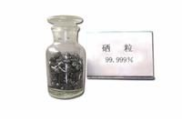

硒资源的开发
硒资源的开发利用是朝阳产业，有巨大的发展空间。我国自1990年至2005年掀起硒开发的热潮以来，几经周折，但是整个硒资源的开发依然限于硒本身概念化的炒作，对硒的开发尤其是生物硒资源开发利用手段根本不成熟，基本停留在初级商业化应用阶段，没有实现其真正的价值。川奇药业利用高科技手段，-------实体中含量恒定，增加了产品的附加值，实现了生物硒资源开发的标准化、工业化、规模化生产。更为重要的是该公司针对一些慢性疾病以及人群亚健康状况，研发了L-硒-甲基硒代半胱氨酸，开创了我国硒资源深度开发的先河。无疑，它的思路和方向是正确的，也为我国其他企业在硒产品开发利用方面提供了很好的范本。
抽样调查表明，我国有三分之二的地区处于缺硒状况，许多有远见的经济或企业家正是看准了这一潜在的商机，使得全国各地有很多地方都在打硒资源的牌，美誉有可能逐步淡脚踏实地做一些工作，也希望各级政府采取切实可行的措施促进硒资源开发，打好“硒都”
富硒产业，前景令人期待。在甘肃兰州、陕西紫阳、贵州开阳、湖南桃源等地的硒资源开发企业以不可阻挡之势攻城略地之际，如何实现“第一高硒区”资源的有效利用开发，又好又快地拉动“富硒产业”这驾马车，打响恩施“富硒”的牌子，前路依旧漫长。写好“硒”文章，做好“硒”产品，我州在充分利用硒资源的路上依然任重道远，必须审时度势、抓住机遇、发展优势产业，不断扩大硒资源产业链的开发。企业要充分利用本地硒资源，并结合市场需求，在合作创新的同时加强自主创新。让我州硒产业真正走上“硒”望之路。
硒 - 发现
 永斯·雅各布·贝齐里乌斯
发现人：永斯·雅各布·贝采利乌斯（Jöns Jakob Berzelius），并命名为Selene,希腊语，月亮的意思。
发现年份：1817年
发现过程：1817年，瑞典的贝采利乌斯从硫酸厂的铅室底部的红色粉状物物质中制得硒。他还发现到硒的同素异形体。他还原硒的氧化物，得到橙色无定形硒；缓慢冷却熔融的硒，得到灰色晶体硒；在空气中让硒化物自然分解，得到黑色晶体硒。
硒 - 元素描述
硒被国内外医药界和营养学界尊称为“生命的火种”，享有“长寿元素”、“抗癌之王”、“心脏守护神”“天然解毒剂”等美誉。硒在人体组织内含量为千万分之一，但它却决定了生命的存在，对人类健康的巨大作用是其他物质无法替代的。缺硒会直接导致人体免疫能力下降，临床医学证明，威胁人类健康和生命的四十多种疾病都与人体缺硒有关，如癌症、心血管病、肝病、白内障、胰脏疾病、糖尿病、生殖系统疾病等等。据专家考证，人需要终生补硒。无论是动物实验还是临床实践，都说明了应该不断从饮食中得到足够量的硒，不能及时补充，就会降低祛病
能力。人应该像每天必须摄取淀粉、蛋白质和维生素一样，每天必须摄入足够量的硒。因此，补硒已经成为我们追寻健康的一种潮流，也是势在必行的健康使命。据地质学家考证：中国72%的地区属于缺硒地区，粮食等天然食物硒含量较低；华北、东北、西北等大中城市都属于缺硒地区，中国二十二个省市的广大地区，约七亿人生活在低缺硒地区。科学家测定：有些疾病，特别是肿瘤、高血压、内分泌代谢病、糖尿病、老年性便秘都与缺硒有关。中国著名营养学家于若木指出：“人体缺硒是关系到亿万人民健康的大事，我们应当象补碘那样抓好补硒工作，特别注
意抓老年人的补硒工作，当务之急要做好两件大事：一是各种舆论媒体应当向居民普及宣传有关硒与人体健康的知识，使居民提高对如何防止缺硒的认识；二是着手开发与生产高硒产品，加大力度推广富硒产品”。在已知的六种固体同素异形体中，三种晶体（α单斜体、β单斜体，和灰色三角晶）是最重要的。也以三种非晶态固体形式存在；红色和黑色的两种无定形玻璃状的硒。前者性脆，密度4.26克/厘米3；后者密度4.28克/厘米3。第一电离能为9.
752电子伏特。硒在空气中燃烧发出蓝色火焰，生成二氧化硒（SeO2）。也能直接与各种金属和非金属反应，包括氢和卤素。不能与非氧化性的酸作用，但它溶于浓硫酸、硝酸和强碱中。溶于水的硒化氢能使许多重金属离子沉淀成为微粒的硒化物。硒与氧化态为+1的金属可生成两种硒化物，即正硒化物（M2Se）和酸式硒化物（MHSe）。正的碱金属和碱土金属硒化物的水溶液会使元素硒溶解，生成多硒化合物（M2Sen），与硫能形成多硫化物相似。
硒 - 主要用途
硒的光敏材料
含硒太阳能电池
如：干印术的光复制，这是利用无定形硒的薄漠对于光的敏感性，能使含有铁化合物的有色玻璃退色。也用作油漆、搪瓷、玻璃和墨水中的颜色、塑料。还用于制作光电池、整流器、光学仪器、光度计等。硒在电子工业中可用作光电管、太阳能电池，在电视和无线电传真等方面也使用硒。硒能使玻璃着色或脱色，高质量的信号用透镜玻璃中含2%硒，含硒的平板玻璃用作太阳能的热传输板和激光器窗口红外过滤器。
硒的催化剂
冶金方面，电解锰行业的硒用量占到中国全部硒产量的较大比重，此外，含硒的碳素钢、不锈钢和铜合金具有良好的加工性能，可高速切削，加工的零件表面光洁；硒与其他元素组成的合金用以制造低压整流器、光电池、热电材料。硒以化合物形式用作有机合成氧化剂、催化剂，可在石油工业上应用。硒加入橡胶中可增强其耐磨性。硒与硒化合物加入润滑脂。
硒的营养元素
由于硒是动物和人体中一些抗氧化酶（谷胱甘肽过氧化物酶）和硒-P蛋白的重要组成部分，在体内起着平衡氧化还原氛围的作用，研究证明具有提高动物免疫力作用，在国际上硒对于免疫力影响和癌症预防的研究是该领域的热点问题，因此，硒可作为动物饲料微量添加剂，也在植物肥料中添加微量元素肥，提高农副产品含硒量。硒已被作为人体必需的微量元素，目前，中国营养学会推荐的成人摄入量为每日50-250微克，而中国2/3地区硒摄入量低于最低推荐值，因此，中国是一个既有丰富硒资源，又存在大面积硒缺乏地区，这也是国际学者对中国感兴趣的原因。
据统计，全世界42个国家和地区缺硒，中国有72%的地区处于缺硒和低硒生态环境之中。由于独特的地质地理环境 ，使得位于秦巴山深处的安康，成为世界上面积最大、富硒地层最厚、最宜开发利用的富硒区，属于中国罕见富硒区。在这一纬度带上的区域被称为中国硒谷。在这一区域生长的植被，含有充足的硒元素，可以满足人们缺硒的需求。据地质学家考证：中国72%的地区属于缺硒地区，粮食等天然食物硒含量较低；华北、东北、西北等大中城市都属于缺硒地区，中国二十二个省市的广大地区，约七亿人生活在低缺硒地区。
科学家测定：有些疾病，特别是肿瘤、高血压、内分泌代谢病、糖尿病、老年性便秘都与缺硒有关。中国著名营养学家于若木指出：“人体缺硒是关系到亿万人民健康的大事，我们应当象补碘那样抓好补硒工作，特别注意抓老年人的补硒工作，当务之急要做好两 件大事：一是各种舆论媒体应当向居民普及宣传有关硒与人体健康的知识，使居民提高对如何防止缺硒的认识；二是着手开发与生产高硒产品，加大力度推广富硒产品”。硒被国内外医药界和营养学界尊称为“生命的火种”，享有“长寿元素”、“抗癌之王”、“心脏守护神”“天然解毒剂”等美誉。
硒在人体组织内含量为千万分之一，但它却决定了生命的存在，对人类健康的巨大作用是其他物质无法替代的。缺硒会直接导致人体免疫能力下降，临床医学证明，威胁人类健康和生命的四十多种疾病都与人体缺硒有关，如癌症、心血管病、肝病、白内障、胰脏疾病、糖尿病、生殖系统疾病等等。据专家考证，人需要终生补硒。无论是动物实验还是临床实践，都说明了应该不断从饮食中得到足够量的硒，不能及时补充，就会降低祛病能力。人应该像每天必须摄取淀粉、蛋白质和维生素一样，每天必须摄入足够量的硒。因此，补硒已经成为我们追寻健康的一种潮流，也是势在必行的健康使命。
补硒十大功效
1．提高人体免疫力；2、抗氧化、延缓衰老；3、保护修复细胞；4、参与糖尿病的治疗；5、防癌抗癌 6．保护眼睛；7、提高红细胞的携氧能力；8、防治心脑血管疾病；9、解毒、防毒、抗污染；10、保护肝脏。硒 - 对植物的作用
土壤中的硒是植物的主要来源，大气中的硒也是植物硒的来源之一。根据植物对硒的吸收能力，可分硒积聚植物和硒非积聚植物两大类。硒积聚植物常被称为“硒指示植物”。包括两种：（1）原生硒积聚植物，如黄芪属（Astragalus）植物，含硒量常超过1000ug/g；（2）次生硒积聚植物，如紫苑属（Aster）植物，每克含硒量很少超过几百微克。许多杂草和大部分农作物类植物，是硒积聚植物，含硒量不超过30ug/g，其中十字花科植物对硒的积聚能力最强，其次是豆科，谷类最低。谷类中，小麦对硒的积聚最多。据研究，在土壤中增施硒肥或在植株叶面上喷洒硒剂溶液，可提高植物的含硒量。植物中的硒主要以有机硒化合物的形式存在。植物对硒的吸收是一个主动过程，但一些因素也会影响植物对硒的吸收。土壤类型不同，硒的存在形式和含量不同，植物对硒的吸收也不同。在酸性土壤中（pH值4.5~6.5）,硒常以难溶解的碱式亚硒酸铁存在，不易被植物利用和吸收；在劫难在碱性土壤中（pH值7.5~8.5），硒可氧化成硒酸根离子而成水溶性的，易被植物吸收和利用。在某些气候极潮湿的地区，土壤中硒的大部分被雨水等淋滤掉了，植物含硒量因此受影响。以不同形式存在的硒，它们被植物吸收的程度是不相同的。硒酸盐的吸收比亚酸盐更容易，单质硒不易为植物所吸收。由于硒酸盐、亚硒酸盐与硫酸盐、亚硫酸盐的相似性，硫对硒的吸收有竞争作用。植物所生长的环境以及植物的种类都将影响植物对硒的吸收。据研究报道，硫饥饿能促进番茄对厅的吸收和运输；在低浓度范围（0.025mgSel-1）、硫（60mgsL-）对硒的吸收有协助作用，这有大豆、大麦、水稻吸收硒、硫的研究例证，但在较高浓度下对硒、硫的吸收表现出相互拮抗。
硒是硒积聚植物的必需微量元素。原生硒积聚植物总是生长在含有可利用形式的硒的土壤中，含硒量每克土高达几千微克的硒，而生长在其附近的同一类植物的硒非积聚各种，仅含有几微克的硒。硒不是硒非积聚植物生长所必需的微量元素。硒可能是高等植物生长的必需营养元素。据研究，用不同浓度的亚硒酸钠处理稻种，培养基中适量的硒（0.1~1.0ug/g）可以促进水稻的生长、增加产量及籽粒中的硒含量。1.0ug/g的硒可明显提高水稻苗期的根系活力和分蘖期、孕穗期的谷胱甘肽过氧化物酶（GSH-Px）活性，籽粒中的氮含量、硒含量明显高于对照，空秕率大大降低。玉米植株叶面喷硒试验表明，不仅谷实硒含量提高了，还有增产的趋势。湖北省鄂西州将硒投放油菜田中，油菜增产1~3成。10.0ug/g的亚硒酸钠明显抑制水稻苗期生长和分蘖期GSH-Px活性，但对孕期该酶的活性却有促进作用，但籽粒空秕率明显高于对照，水稻产量降低。硒以农作物生长和产量的促进作用，可能是因为适量的硒进入植物体内,过氧化物酶活性升高，增强了植株体内抗氧化能力，从而提高了植株的抗逆性和抗衰老能力，保证了植株的正常生长。所以，在低硒地区种植水稻、玉米、小麦等农作物时，施用适量的硒可能获得增产效果。过量硒对农作物有毒害作用，可能是由于硒促进体内的过氧化作用占主导地位所致。
硒 - 对人体功用 硒——抗癌之王
硒粒
科学界研究发现，血硒水平的高低与癌的发生息息相关。大量的调查资料说明，一个地区食物和土壤中硒含量的高低与癌症的发病率有直接关系。目前癌症治疗中使用硒辅助治疗十分普遍。
硒是迄今为止发现的最重要的抗衰老元素
广西巴马县是世界著名四大长寿地区之一。中国科学院专家对巴马的研究表明：巴马土壤、谷物中的硒含量高于全国平均水平10倍以上，百岁老人血液中的硒含量高出正常人的3-6倍。后来在安徽省石台县又发现一个长寿村。80岁以上老人占全村人口的12%。更为奇特的是50年来未发现一例癌症患者、心脑血管、糖尿病患者和肥胖患者。经对该村土壤中硒含量分析测定表明：硒
含量高出一般地方10倍。原来，硒元素是抗氧化剂谷胱甘肽过氧化物酶的活性成分，人体补充了充足的硒元素，就能有效清除自由基，抗氧化，延缓衰老，另外曾经有专家用纳米硒对患者进行临床补充研究，发现硒如果配合维生素E、β—胡萝卜素进行适量补充，效果会更加出色。
生物学家们经过长期的研究发现：硒对视觉器官的功能是极为重要的。硒能催化并消除对眼睛有害的自由基物质，从而保护眼睛的细胞膜。若人眼长期处于缺硒状态，就会影响细胞膜的完整，从而导致视力下降和许多眼疾病如白内障、视网膜病、夜盲症等的发生。目前，一些大城市的医院对眼病患者已开展硒治疗，临床表明，硒对提高视力确有明显的作用，能治疗白内障、视网膜病等多种眼疾。
硒是维持心脏正常功能的重要元素，对心脏肌体有保护和修复的作用。人体血硒水平的降低，会导致体内清除自由基的功能减退，造成有害物质沉积增多，血压升高、血管壁变厚、血管弹性降低、血流速度变慢，送氧功能下降，从而诱发心脑血管疾病的发病率升高，然而科学补硒对预防心脑血管疾病、高血压、动脉硬化等都有较好的作用。
位于长江三角洲的江苏启东地区是渔米之乡，经济发达，但是长期以来这里的人们肝癌、肝炎发病率极高，发病原因不清楚。中国预防医学科学院的专家们经16年研究终于找出原因 ，原来这里的水、土壤、粮食中缺少元素“硒”，生活在这里的人们从水和粮食中获取的硒很少，体内硒含量特别低，而体内缺硒的人易被肝炎病毒传染。此外，体内长期缺硒的肝炎患者转化为肝癌病人的危险是其它人群的202倍，特别值得一提的是：硒可以使肝炎病人的病情好转，使肝炎病人发生癌症的比例大大降低。
硒是构成谷胱甘肽过氧化物酶的活性成分，它能防止胰岛β细胞氧化破坏，使其功能正常，促进糖份代谢、降低血糖和尿糖。医生通过让糖尿病人定量服硒，可以起到保护和恢复胰岛功能的作用，有利于改善糖尿病的症状，降低尿中的葡萄糖和血红蛋白水平。所以，有人称硒是微量元素中的“胰岛素”。
硒与金属的结合力很强，能抵抗镉对肾、生殖腺和中枢神经的毒害。硒与体内的汞、锡、铊、铅等重金属结合，形成金属硒蛋白复合而解毒、排毒。因此经常接触有毒有害工作的人群，尤其需要注意补硒。另外，在工作环境中或生活中，经常接触电视、电脑、手机等辐射干扰的人，要补硒，因为补硒可以保护造血
硒的重要营养生理作用是参与机体谷胱甘肽氧化酶（gluthathione peroxidase,GSH-PX）的组成，是GSH-PX的活性中心元素，其抗氧化作用也是通过谷胱甘肽氧化酶实现的。GSH-PX对机体氢或脂的过氧化物具有较强的还原作用，催化还原性谷胱甘肽（GSH）把体内有害的不饱和氢过氧化物（ROOH）还原为无害的羟基化合物，并使过氧化氢（H202）分解，从而保护细胞膜结构的完整。刘纯仁（1996）报道：体内缺硒可使动物体内谷胱甘肽过氧化物酶活性降低，导致组织体过氧化物不能及时分解而对组织发生损害，而补硒后其酶活性增高。
研究表明，硒是GSH-PX中起氧化还原催化作用的仅有原子，存在于多肽链上的硒代半胱氨酸是酶的催化部分，其中硒氢基（-SeH）代表酶的活性还原形式。硒作为GSH-PX重要组成成分和活性中心，其功能保护细胞膜免受过氧化物的侵害，使细胞解离率降低，从而维护细胞正常生理功能，Allen等（1995）报道，当日粮种硒水平较低或最适时，血液和器官中的硒水平和谷胱甘肽氧化物酶活性间呈强相关
硒在男性组织体液中含量依次为：肾〉肝脏〉睾丸〉心肌〉肠〉肺〉脑、肌肉。男性体内的硒，有25%-40%集中在生殖系统，硒具有增强精子活力和性机能的功效。所以人们称硒为男性的体内黄金。糖尿病患者、心脏病患者、肝病患者和泌尿系统都有不同程度的性功能衰退，补硒可以调节免疫功能和抗氧化功能，硒能提高与改善性功能，帮助有阳痿、早泄、性功能低下的人逐渐回复正常。
日本医学家千叶百子教授研究发现，男性不育与精液中硒含量不足有关。据对100名20—30的丈夫进行检查，其中27人不生育的原因在丈夫方面，而这27人精液中的硒含量显著低于其它正常人。
研究还发现，妇女流产和无法解释的不孕与精子水平低下有关。美国最近的调查显示，妇女自发性流产的危险性与体内硒水平低下有关。在过去几年里，研究者己证实了两种精子特异硒蛋白。一种是对精子核特异性的GSH-Px，另一种是在精子中部发现的，具有酶和结构的功能。精子不游动是由于其中部受损而引起的（例如精子断尾）。缺硒会引起睾丸发育受阻，当低繁殖力的男子服用有机硒3个月，成为父亲的比率提高了11%。
银屑病 俗称牛皮癣。研究表明：银屑病患者血清中硒水平较正常人显著降低。发病时间超过3年的患者，疾病严重的患者，其体内血清硒的水平就越低。银屑病患者除血硒值较低外，还有GSH-PX活力下降，LPO值明显升高。补充硒制剂后，血硒值升高，GSH-PX活力增强，LPO值下降，临床症状明显改善，补硒可增强机体抗氧化能力和调节人体免疫功能，对银屑病起辅助治疗作用。
白癜风 白癜风患者过氧化氢酶活性较低，使得表皮过氧化氢聚集，因此，推测氧化应激可能是导致黑色素细胞死亡、是发病的原因之一。硒的抗氧化作用对于白癜风患者也同样有着防治的效果。据报道，白癜风患者皮肤损伤组织中硒含量降低。对皮肤组织液的硒含量测定显示，白斑部位皮肤组织液硒含量低。也表明白癜风发病与硒含量降低有关。
扁平疣是人类乳头瘤病毒引起的皮肤上突出的病变。多发于面部、颈部、手背等处。常呈慢性病变过程，硒具有抗氧化能力和调节免疫的功能，还具有阻断病毒的功能。
硒除了对银屑病、白癜风的辅助治疗外，还可应用于皮肤老化及免疫相关性皮肤疾病和病毒性皮肤疾病的治疗。硒在皮肤科的应用有广阔前景。
缺硒会导致免疫功能下降，易引发胃肠道疾病，引起胃粘膜屏障不稳定，黄嘌呤氧化酶在应急情况下会持续升高，造成胃粘膜缺血性损伤，氧自由基增多，导致胃炎、胃溃疡等消化系统病变。硒是一种天然抗氧化剂，它能有效清除自由基，组织胃粘膜坏死，促进粘膜的修复和溃疡的愈合，预防癌变。
中国肿瘤研究所与美国国立癌症研究所在河南林县对2万多人进行6年的补硒干预研究。结果表明，补硒可降低胃癌死亡率20%-24%，降低胃癌发病率16%，癌前病变的阻断治疗也有较好的效果。胃镜复查可见不典型增生病人的症状转为消失，萎缩性胃炎病理好转。
有机和无机形式的硒都可以很有效率的被吸收，只是发生在不同的肠道部位；吸收率并非调控动物体硒之恒态的机制。十二指肠是硒主要的吸收位置，空肠和回肠则有少量的吸收，但胃则没有吸收硒之能力。甲硒胺酸的吸收效率比亚硒酸盐(selenite)来的好。含有硒的氨基酸吸收是利用氨基酸运送系统，吸收率可达到80％。甲硒胺酸的吸收率比硒胺酸好。在某些研究中亚硒酸盐的吸收率可达到85％以上，因与肠道中物质的交互作用，吸收率较有变化。一但吸收后，保留程度高于硒酸盐。硒酸盐(selenate)的吸收又比亚硒酸盐好，几乎被完全吸收；但并入组织前，大部分会由尿中排除。
维生素A、维生素C、维生素E都会增加硒的吸收，当在小肠腔的榖胱甘肽(glutathione, GSH)浓度低时也会增加吸收。重金属(例：水银)和植酸被认为会抑制硒的吸收。
高剂量的维生素C、锌及重金属（例如：汞）会减少硒的吸收；但若在饮食中合并食用硒及维生素C，硒可以和饮食中的氨基酸形成保护结构而不影响其吸收。
小肠吸收之硒会和运输蛋白结合经血液携带至肝和其他组织。肾脏、肝脏、心脏、胰脏和肌肉都是硒含量较高的组织，肺脏、脑部、骨骼和红血球也含有硒。目前如何调控硒从组织释放到血浆里或是组织从血浆里吸收的作用机制仍然不明。存在血浆中的硒，与许多不同分子结合成不同的形式存在着。其中最多的就是硒半胱氨酸（Selenocysteine,Sec）：由硒原子取代原本在半胱氨酸中的硫原子而存在，由硒蛋白质P（Selenoprotein P）这个运输蛋白所携带，而这个运输形式在血浆中也占了一半以上。其它类型的运输形式还有甲硒氨酸（Selenomethionine），由硒原子取代原本在甲硫氨酸中的硫原子而存在，也是由硒蛋白质P所携带；除了这两种有机硒之外，也有无机硒的运输形式：硒酸盐、亚硒酸盐、硒化氢，与在人体血液中α球蛋白及β球蛋白的巯基( sulfhydryl groups)结合，例如：极低密度脂蛋白(VLDL)和低密度脂蛋白(LDL)。
而前述各种带有硒且存在于血浆中的分子，均会被细胞所吸收。而细胞则释放甲基化的硒化物至血浆中，再经由尿液将其排出体外。
分子特性
硒蛋白质P(Selenoprotein P)- 是一种含有硒半胱氨酸的血浆蛋白，也是一种运输蛋白，主要是由肝脏合成，在血浆中大约有50％以上的硒是和含硒蛋白质P结合。含硒蛋白质P的结构最多可以带有十个Sec残基，当硒量下降时也会使残基合成量下降。
α球蛋白（α-globulin）- 其中又分成α 1-globulin及α 2-globulin。两者均为糖蛋白，亦皆可帮助脂质的运输。其中α 2-globulin又有一些不同的功能：帮助血红素的运输、铜运输、血液凝集以及调控氧化酶的活性。
β球蛋白（β-globulin）- 可以帮助脂质的运输以及铁和其他矿物质的运输。
含硒氨基酸和无机态硒都会在组织中进行代谢。从饮食而来的甲硒胺酸其利用情形和甲硫胺酸相似，可储存在氨基酸代谢池中，用于合成蛋白质，也可代谢成硒半胱氨酸和硒胱胺酸。
硒胺酸可以从饮食中直接得到，或是经由甲硒胺酸代谢而来。硒半胱氨酸经由β-硒半胱氨酸裂解酶作用之后产生游离态硒。游离态硒可以从谷胱甘肽(GSH)得到氢，然后生成硒化物(selenide)。硒化物有两个代谢途径，其一是经过甲基化作用后借由尿液排出体外，或是形成硒代磷酸盐(selenophosphate)，这是体内重要含硒酵素的前驱物，例如5'-脱碘酶(5'-deiodinase)或榖胱甘肽过氧化酶(glutathione peroxidase)。
从食物中得来的硒酸盐在体内可转换成亚硒酸盐，更进一步代谢成硒代谷胱甘肽（selenodiglutathione）及硒离子，后者成为硒蛋白或酵素的原料。
硒最主要的功能是作为各种en:selenoprotein硒蛋白的组成分，进而影响其酵素活性或功能。
谷胱甘肽过氧化酶( glutathione peroxidase, GPX)
这是研究最多的含硒酵素，因为最早发现硒的生化功能就是作为谷胱甘肽过氧化酶的辅基。谷胱甘肽过氧化酶有五种亚型，通常标记为GPX1, 2, 3, 4, 5，每一种的亚型存在于不同的组织，但是催化相同的反应。主要的功能是消除组织中的过氧化氢(H2O2)和其他有机态过氧化物。还原过氧化物时，同时利用谷胱甘肽提供还原力(图)[11]。
甲状腺素脱碘酶(Iodothyronine Deiodinases,IDI或DI)
脱碘酶是含硒蛋白质，酵素的活性区是硒半胱氨酸。已知有三种亚型。第一型存在肝脏、肾脏和肌肉，第二型及第三型存在皮肤、脑下垂体、脂肪细胞和脑。主要功能是催化甲状腺素和相关代谢物脱去碘原子（图）
甲状腺素脱碘酶的作用，例如：5'-deiodinase(5'-DI)将T4型甲状腺素脱碘转换成T3型甲状腺素，后者是体内活性最高的甲状腺素，可调节代谢、生长及发育。去碘酶也会将T4转换反式T3(reverse T3)，催化产生反式T3的酵素是5-deiodinase。T3或是反式T3都可进一步脱碘产生T2或是3,3'-diiodothyronine，这些都是没有活性的代谢物。
“硫氧化还原蛋白”还原酶(Thioredoxin Reductase，TrxR)
酵素的活性区有硒半胱氨酸，并含有FAD。此酵素存在血液、皮肤和肝脏等组织。主要反应是将氧化态的“硫氧化还原蛋白”(thioredoxin)中的双硫键(disulfide bond)予以还原。还原态的“硫氧化还原蛋白”可以将氢原子提供给其他化合物（图[12]）。
硒代磷酸盐合成酶(Selenophosphate Synthetase)
硒代磷酸盐合成酶有两种亚型，其中一型含硒半胱氨酸，催化硒离子磷酸化成硒代磷酸盐的反应，这是合成含硒蛋白质的必备原料(图)[13]。
硒蛋白质P(Selenoprotein P)
这是硒的运输蛋白质。有移除自由基的作用，具有抗氧化剂的功能。当体内的硒含量不足时，硒蛋白质P会优先获得硒。
硒蛋白质W(Selenoprotein W)
含有硒半胱氨酸，主要存在心肌、骨骼肌和其它组织的细胞质中，可能扮演抗氧化剂的功能。
硒是人体必需的微量元素。中国营养学会也将硒列为人体必需的15种营养素之一，国内外大量临床实验证明，人体缺硒可引起某些重要器官的功能失调，导致许多严重疾病发生，全世界40多个国家处于缺硒地区，中国22个省份的几亿人口都处于缺硒或低硒地带，这些地区的人口肿瘤、肝病、心血管疾病等发病率很高，
研究表明，低硒或缺硒人群通过适量补硒不但能够预防肿瘤、肝病等的发生，而且可以提高机体免疫能力，维护心、肝、肺、胃等重要器官正常功能，预防老年性心、脑血管疾病的发生。
对克山病的研究拉开了人们对硒深入探索的大幕，在随后的多年中，研究人员发现，在美国和芬兰等国高硒地区冠心病、高血压的发病率比低硒地区明显低，脑血栓、风湿性心脏病、全身动脉硬化的死亡率在高硒地区明显低于低硒地区，这些结果均表明，硒在维持心血管系统正常结构和功能上起着重要作用，缺硒是导致心肌病、冠心病、高血压、糖尿病等高发的重要因素。而补硒则有利于减少多种心脑血管疾病的发生、改善患者症状、提高患者对抗疾病的能力。 硒元素对心脏疾病的医理作用
抗氧化，清垃圾
心脑血管疾病的产生与体内脂质过氧化有关。患者血浆中有害的脂质过氧化物浓度增高，就会使血液中部分有形物在血管壁上沉积，形成冠状动脉粥样斑块，由此引起冠心病、心脑血管疾病。这就如同生锈的管道容易存积污垢从而影响管道畅通的道理一样。而硒可以清除这种脂质过氧化物，保护动脉血管壁上细胞膜的完整，阻止动脉粥样硬化，起到减少血栓形成，预防心肌梗塞的作用。
调血脂，防血栓
胆固醇是健康的大敌，当血液中胆固醇增高时，容易形成动脉硬化斑块，这些斑块在动脉壁内堆积，使动脉管腔狭窄，阻塞血液流入相应部位，引起动能缺损，引发多种心脑血管疾病。而硒依靠其强大的抗氧化功能，可调节体内胆固醇及甘油三酯，降低血液黏度，预防心血管病的发生。
保护、修复血管，抗老化血管壁的老化是心血管疾病发生的重要的因素。之所以中风和猝死的人士以中老年人居多，其中最大的原因就在于人到中老年之后，因为血管壁的逐渐老化导致弹性下降，血管壁变得非常脆弱，所以稍微受到外界的不良影响就特别容易崩溃、出血，造成血栓、脑溢血等。而血管老化并非不可阻止，因为促使血管加速衰老的物质就是有害自由基，通过清除自由基，就能延缓血管壁衰老。硒是强抗氧化剂，它能及时的清除体内的有害自由基，防止人体血管老化，预防中风等心血管疾病的发生。
调节免疫，增强抵抗力
心脑血管疾病患者补硒可有效调节身体免疫功能，提高患者对心脑血管疾病的抵御能力，防止并发症的产生。
普通人缺硒，身体患肿瘤的机率大大增加体内缺硒的肿瘤患者多有远处转移、多发性肿瘤、肿瘤分化不良、恶性程度高及生存期短的可能；在与肿瘤的对抗中，硒具有举足轻重的作用，近几十年，经科学家系统、深入的研究、开发，人们已经能够应用硒来防癌、抗癌以及解除癌症病人的痛苦、延长癌症病人的生命，由于硒在防治肿瘤方面所显示出的强大作用，台湾正义出版社将硒冠以“抗癌之王”的称号。
硒元素对癌症的医理作用
改善免疫功能 提高抵抗力
肿瘤患者免疫功能下降是比较突出的现象，同时免疫力下降也是肿瘤发生、发展的重要的因素之一，而抗肿瘤免疫主要是细胞免疫，因此提高机体的细胞免疫功能十分重要。研究表明，硒显著地影响免疫系统所包含的全部三种调节机制，即细胞免疫、体液免疫和非特异免疫。硒还能促进淋巴细胞产生抗体，使血液免疫球蛋白水平增高或维持正常，因此临床中给肿瘤患者适量补硒，可有效提高患者机体免疫功能，增强机体防癌和抗癌能力。
提高机体抗氧化能力
肿瘤病人广泛存在抗氧化不平衡，体内有害自由基过剩，硒可以通过一系列含硒酶，使许多脂质过氧化物、过氧化氢等得到有效的清除。
阻断肿瘤血管形成，防止肿瘤复发、转移
硒能抑制肿瘤血管形成，预防肿瘤生长，转移。肿瘤转移和生长，依赖于自身建立生血管生成抑制因子”有促进作用，营造抗“肿瘤新生血管”形成的环境，从而抑制“肿瘤新生血管网”的形成与发展，切断肿瘤细胞的营养供应渠道。由于肿瘤得不到营养来源，会逐渐枯萎、消亡；同时由于切断了肿瘤的代谢渠道，肿瘤组织自身废物不能排出，肿瘤逐渐变性坏死，其机制可形象地比喻为"断敌粮草"。
直接杀伤肿瘤细胞
硒增高癌细胞中环腺苷酸（CAMP）的水平，形成抑制癌细胞分裂和增殖的内环境，起到抑制肿瘤细胞DNA、RNA及蛋白质合成，使肿瘤细胞在活体内增值力减弱、控制肿瘤细胞的生长分化的作用，从而抑杀癌细胞。体外研究可以看到，加硒后使培养中的肝癌细胞在形态上表现出细胞核固缩、核破裂、核消失的比例明显升高。
硒是人体必需的微量元素，在人体中，肝脏是含硒量最多的器官之一多数肝病患者体内均存在硒缺乏现象，并且病情愈重。硒被认为是肝病的天敌、抗肝坏死保护因子，国内外多项研究均表明，乙肝迁延不愈与缺硒有很大关系，肝病患者补硒有很好的效果。
硒元素与肝病的医理作用
增强免疫功能，防止肝病反反复复
肝病患者普遍免疫功能低下，这就直接造成了机体识别以及抑制病毒能力的下降，其最明显的表现就是体内的病毒难于完全清除，病情容易反复发作，而硒是强效免疫调节剂，可作为免疫系统的非特异刺激因素，刺激体液免疫和细胞免疫系统，增强机体的免疫功能，提高肝脏自身的抗病能力，从而有助于防止肝病病情的反复发作。另外，硒还可通过提高免疫功能来改善肝病患者的多种体表症状，如：甲、乙型肝炎患者补硒能够在相对较短的时间内，大大改善食欲不振、明显乏力，面容灰暗等症状。
提高抗氧化能力，预防肝纤维化
肝病患者体内普遍缺硒，而硒的缺乏，一方面会造成免疫功能降低，一方面还会引起机体内抗氧化系统遭到破坏而使有害物质“自由基”的清除受到障碍，过多的自由基会造成肝脏损伤，从而会引起肝病病情的恶化，而硒是一种强抗氧化剂，可通过谷胱甘肽过氧化物酶完成抗氧化作用，保护肝细胞的结构完整，清除自由基，加快脂质过氧化物的分解，保护肝脏，促进肝功能恢复，防止肝纤维化的出现。
特别提醒：肝纤维化几乎是肝病向肝硬化、肝癌转化的必经之路，抑制肝纤维化的发生，对防止肝硬化具有重要意义。
阻断病毒突变，加速病体康复
肝病多是病毒引起，而病毒在人体缺硒时极易变异，从而变本加历的对人体产生伤害。美国和欧洲科学家合作进行的研究显示，人类的流行性感冒病毒在缺乏硒的动物身上会变得更凶猛、更危险，这是由于变异的病毒不但会逃避身体免疫监控，还会降低治疗药物的作用，影响治疗效果，研究发现，硒是唯一与病毒感染有一定直接关系的营养素，补硒有利于阻断病毒的变异，加速病体的康复。
解毒除害，保护肝脏
硒具有良好的解毒功能，能拮抗多种有毒重金属物质(如：汞、铅、苯、砷等)和 一些有害化合物，从而减少环境中有毒物质对肝脏的伤害。
与药物协同、效果事半功倍
在肝病治疗中会用到一些药物，明知其有毒副作用，却又不得不用，如何增强药物效果，缩短病程呢？研究发现：当硒与药物联合使用时，可能会出现良好的协同或相加效应，从而有利于改善药物的毒副作用，提高药物的疗效。
人体内的硒含量越低，胃部患病的可能性越大浅表性胃炎患者体内含硒量往往比健康人要低血液中含硒量低的萎缩性胃炎患者“癌变”的可能性大大增加多数胃癌病人处于硒缺乏状态。
硒元素与胃病的医理作用
人体内硒水平的降低，会造成免疫功能缺失及抗氧化能力的下降，引起胃粘膜屏障不稳定，黄嘌呤氧化酶在应急情况下会持续升高，造成胃粘膜缺血性损伤，氧自由基增多，导致胃炎、胃溃疡等消化系统病变，硒是一种天然抗氧化剂，能有效抑制活性氧生成，清除人体代谢过程中所产生的垃圾—自由基，阻止胃粘膜坏死，促进粘膜的修复和溃疡的愈合，预防癌变，所以，每天服用一定量的硒将有助于慢性胃病患者控制病情，缓解胃病症状。
放化疗患者机体免疫功能的衰退，有可能会进一步促使肿瘤失去免疫监控，加速增殖。这就是为什么很多肿瘤患者经放、化疗后，病情一时有所好转，但很快又恶化，导致边治疗、边扩散、边转移，同时，患者经放、化疗后机体抗感染能力也会大大减弱，从而增加了许多危及生命的并发症的发生。硒是一种优良的放化疗辅助剂，肿瘤患者在放化疗期间服用硒可以起到多方面的作用。
硒元素与放化疗的医理作用
补硒可以提高放化疗患者机体的免疫力，使患者机体有足够能力顺利完成放化疗，免疫力的提高也有利于帮助肿瘤患者尽快康复，同时预防肿瘤的转移与复发，另外，长期适当的服用硒对人体不会产生任何的副作用，可以连续使用。
补硒不但可减少恶心、呕吐、肠胃功能紊乱，食欲减退、严重脱发等放化疗时的毒副反应，还可减轻化疗引起的白细胞的下降程度。
由化疗药物所致的骨髓毒副反应主要是使细胞脂质氧化，过多的过氧化物堆积，引起基质细胞的损伤，由此累及骨髓的贮血和造血功能。硒是有效的抗氧化剂，服用硒可增强人体抗氧化功能，抑制过氧化反应，分解过氧化物，清除自由基和修复细胞损伤，调节机体代谢及其增强免疫功能。临床研究证实，在化疗前后服用较大剂量的硒制剂，白细胞总数及中性粒细胞数与不用硒制剂比较显著提高，这比用粒细胞刺激因子一类昂贵药物要经济得多。
补硒能预防放化疗时出现耐药性：长期的放化疗，肿瘤细胞容易产生耐药性。当肿瘤细胞受到放化疗攻击时，一部分肿瘤细胞死亡，一部分逃脱了死亡，并在细胞内建立了抵御放化疗的强大工事，使再次放化疗的效果明显下降。而在化疗的同时补硒，可以显著降低肿瘤细胞对化疗的耐药性，使肿瘤细胞始终对化疗保持敏感，易于治疗。
硒能解除癌症患者化疗药物的毒性作用，在化疗药物中我们常用的磷酰氨、顺铂、氨甲碟呤、阿霉素、长春新碱和强的松等，在杀死癌细胞的同时，能引起许多副作用。进一步降低了人体的免疫功能，大大地限制了化疗药物的应用，能不能找到一种既能保持化疗药物的疗效，又能限制毒副作用的化疗性伴侣呢？国内外科学家苦苦探索，最终发现，最理想的伴侣就是硒，以硒作为解毒剂，可以加大化疗药物的剂量，使药力大大提高。
糖尿病对许多人特别是中老年朋友来讲已不太陌生。它被人们称为“富贵病”，并和肿瘤、心血管疾病一道被列为对现代人危害最大的三大慢性疾病。最近的医学研究表明，糖尿病患者体内普遍缺硒，其血液中的硒含量明显低于健康人。补充微量元素硒有利于改善糖尿病病人的各种症状，并可以减少糖尿病病人各种发症的产生机率。糖尿病患者补硒有利于控制病情，防止病情的加深、加重
硒与糖尿病的医理作用
糖尿病患者补硒有利于营养、修复胰岛细胞，恢复胰岛正常的分泌功能
人体内必须有胰岛素的参与，葡萄糖才能被充分有效地吸收和利用，当胰岛素分泌不足或者身体对胰岛素的需求增多造成胰岛素的相对不足时，就会引发糖尿病。胰岛素分泌不足最直接的原因就是能够产生胰岛素的胰岛细胞受损或其功能没有发挥。而补硒可以保护、修复胰岛细胞免受损害，维持正常的分泌胰岛素的功能。医学专家提醒：营养、修复胰岛细胞，恢复胰岛功能，让其自行调控血糖才是治疗糖尿病的根本，
清除自由基是预防和治疗糖尿病及其并发症的主要途径
人体在新陈代谢的过程中会产生许多有害的物质自由基，其强烈的引发脂质过氧化作用就是糖尿病产生的重要原因之一，另外，糖尿病病人的高血糖也会引发体内自由基的大量产生，从而损伤人体内各种生物膜导致多系统损伤，出现多种并发症，后果极为严重，如何有效预防和减轻并发症呢，硒有着巨大的潜力，因为大量医学研究发现糖尿病病人补硒以后可以提高机体抗氧化能力，阻止这种攻击损害，保护细胞的膜结构，使胰岛内分泌细胞细胞恢复、保持正常分泌与释放胰岛素的功能。
增强糖尿病患者自身抗病力是防止并发症的重要手段
硒是强免疫调节剂，人体中几乎每一种免疫细胞中都含有硒，补硒可增强人体的体液免疫功能、细胞免疫功能和非特异性免疫功能，从而整体增强机体的抗病能力，这对处于免疫功能低下状态的糖尿病患者，无疑是增加了一道抗感染及预防并发其它疾病的坚固防线。
硒与视力
视力是人类观察事物，从事工作、学习、生活、娱乐和情感交流的主要机能。视力好坏，已成为许多重要职业的基本条件。硒能催化并消除对眼睛有害的自由基物质，从而保护眼睛的细胞膜。若人眼长期处于缺硒状态，就会影响细胞膜的完整，从而导致视力下降和许多眼疾如白内障、视网膜病、夜盲病等的发生。
硒与脑功能
硒对脑功能是非常重要的，硒缺乏使一些“神经递质”的代谢速率改变，同时体内产生大量的有害物质自由基也无法得到及时清除，从而影响人体的脑部功能，而增加硒不但会减少儿童难以治愈的癫痫的发生，也可以有效地减轻焦虑、抑郁和疲倦，这种效果在缺硒人群中最明显。
硒与甲状腺疾病
硒与人体内分泌激素关系密切，其中人体甲状腺中含硒量高于除肝、肾以外的其它组织，硒在甲状腺组织中具有非常重要的功能，可以调节甲状腺激素的代谢平衡，缺硒会造成甲状腺功能紊乱。
硒与前列腺疾病
低地区的前列腺疾病发病率远远高于高硒地区，在前列腺病理演变过程中，元素镉起了重要作用，随着年龄的增长和环境的影响以及低硒导致了内分泌等的失调，使前列腺聚集镉而引发前列腺增生甚至肿瘤。而硒有抑制镉对人体前列腺上皮的促生长作用，从而减轻病情。
硒与男性健康
男性不育症患者精液中硒水平普遍偏低，研究发现：精液中硒水平越高，精子数量越多，活力越强。人类精子细胞含有大量的不饱和脂肪酸，易受精液中存在的氧自由基攻击，诱发脂质过氧化，从而损伤精子膜，使精子活力下降，甚至功能丧失，造成不育。硒具有强大的抗氧化作用，可清除过剩的自由基，抑制脂质过氧化作用。男性不育症患者精液硒水平低，自然会削弱机体自身对精液中存在的氧自由基的清除和脂质过氧化的抑制，从而导致患者精子活力低下，死亡率高，引发不育症。
食物补充：含硒丰富的食物有：富硒大米、富硒小麦、海鲜、蘑菇、鸡蛋、大蒜、银杏等。 补硒的方法有很多。动物脏器、海产品、鱼、蛋、肉类等是硒的良好来源，多吃这些食物可以安全有效的补硒。但是，有些人的吸收功能欠缺，因此就需要服用体恒健硒维康等高活性易吸收的保健食品来进行补充。市面上出售的含硒保健品、食品即硒营养补充剂种类很多。吃这些含硒制品能不能纠正缺硒现象，主要取决于它们的含硒量。根据观察：中国成年人每日食物外补硒25微克以上有保健作用；缺硒成年人每日食物外补硒50微克或75微克以上，连续服2～3个月，可纠正缺硒。
值得注意的是，很多保健品里不仅仅含有硒，还含有其他成分，如矿物质、维生素等。因此，在服用时，一定要明确其中的含量，结合自己的饮食和所用药物，避免发生过量或与药物相冲突的现象。
补硒不能过量。因为过量的摄入硒可导致中毒，出现脱发、脱甲等。中国大多数地区膳食中硒的含量是足够而安全的。临床所见的硒过量而致的硒中毒分为急性、亚急性及慢性。最主要的中毒原因就是机体直接或间接地摄人、接触大量的硒，包括职业性、地域性原因，饮食习惯及滥用药物等。所以补硒要严格精确摄入量建议服用有国家认证的补硒品，如纳米硒等。
急性中毒通常是在摄入了大量的高硒物质后发生，每日摄人硒量高达400～800毫克/千克体重可导致急性中毒。主要表现为运动异常和姿势病态、呼吸困难、胃胀气、高热、脉快、虚脱并因呼吸衰竭而死亡。致死性中毒死亡前大多先有直接心肌抑制和末梢血管舒张所致顽固性低血压。其特征性症状为呼气有大蒜味或酸臭味、恶心、呕吐、腹痛、烦躁不安、流涎过多和肌肉痉挛。
急性硒中毒的患儿一般都有头晕、头痛、无力、嗜睡、恶心、呕吐、腹泻、呼吸和汗液有蒜臭味、上呼吸道和眼结膜有刺激症状。重者有支气管炎、寒战、高热、出大汗、手指震颤以及肝肿大等表现。急性硒中毒的特征是脱头发和指甲、皮疹、发生周围神经病、牙齿颜色呈斑驳状态。实验室检查，白细胞增多，尿硒含量不高，2～3天后症状逐渐好转。误服亚硒酸钠者，产生多发性神经炎和心肌炎，应与急性硒中毒鉴别以防误诊。
慢性硒中毒往往是由于每天从食物中摄取硒2400～3000微克，长达数月之久才出现症状。表现为脱发、脱指甲、皮肤黄染、口臭、疲劳、龋齿易感性增加、抑郁等。一般慢性硒中毒都有头晕、头痛、倦怠无力、口内金属味、恶心、呕吐、食欲不振、腹泻、呼吸和汗液有蒜臭味，还可有肝肿大、肝功能异常，自主神经功能紊乱，尿硒增高。长期高硒使小儿身长、体重发育迟缓，毛发粗糙脆弱，甚至有神经症状及智能改变。慢性硒中毒的主要特征是脱发及指甲形状的改变。